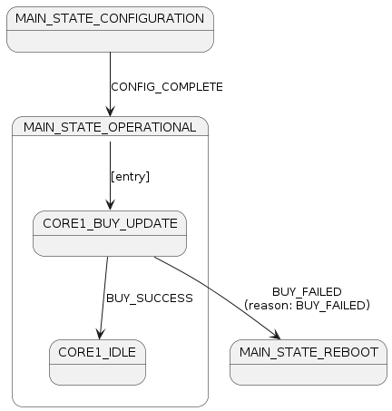
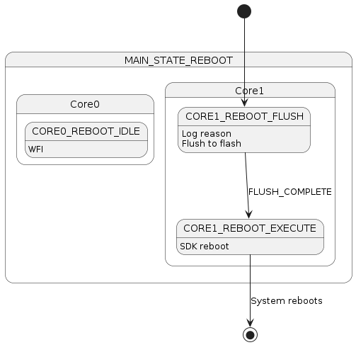
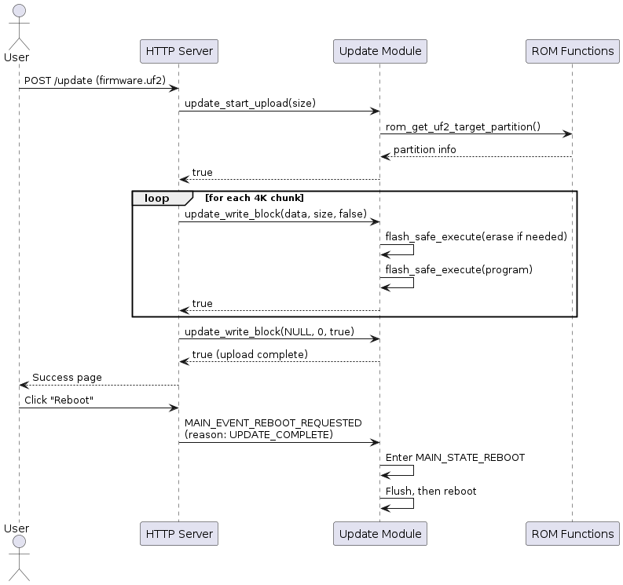

src/update/ ├── CMakeLists.txt ├── update_manager.c include/update/ ├── update_manager.h
ADR-017: Update Module Architecture
Status
Accepted
Date
2026-01-28
Context
The UART2ETH device implements secure OTA (Over-The-Air) firmware updates using the RP2350’s A/B partition scheme with Try-Before-You-Buy (TBYB) semantics. The firmware update functionality is currently scattered across multiple modules:
-
http_server.c- Upload handling, multipart parsing, chunk processing -
flash_persistence.c- Containscall_explicit_buy()function -
core1_main.c- Contains buy operation call incore1_init_complete()
This scattered implementation creates maintenance challenges and violates the single-responsibility principle. Additionally, the current implementation lacks proper state machine integration for the "buy" operation and system reboot handling.
Key requirements:
* Consolidated update functionality in a dedicated module
* Proper state machine integration for buy and reboot operations
* Safe flash operations using flash_safe_execute() for dual-core coordination
* Automatic partition discovery using ROM functions
* Clean separation: HTTP server handles generic uploads, update module handles firmware-specific logic
Decision
We will create a dedicated update module that consolidates all firmware update functionality and integrates properly with the state machine architecture.
Module Structure
Public API
// update_manager.h
typedef enum {
UPDATE_STATE_IDLE,
UPDATE_STATE_RECEIVING,
UPDATE_STATE_COMPLETE,
UPDATE_STATE_ERROR
} update_state_t;
typedef enum {
REBOOT_REASON_NONE = 0,
REBOOT_REASON_UPDATE_BUY_FAILED, // Buy failed, bootloader reverts to old image
REBOOT_REASON_UPDATE_COMPLETE, // Upload complete, reboot to try new image
REBOOT_REASON_USER_REQUESTED, // User triggered reboot via web UI
REBOOT_REASON_ERROR_RECOVERY // Unrecoverable error
} reboot_reason_t;
// Initialization
bool update_init(void);
// Upload handling (called by http_server for firmware uploads)
bool update_start_upload(uint32_t expected_size);
bool update_write_block(uint8_t* data, uint32_t size, bool finished);
void update_abort_upload(void);
update_state_t update_get_state(void);
// Buy operation (called from CORE1_BUY_UPDATE state)
bool update_buy_current_image(void);
// Reboot handling (called from CORE1_REBOOT_* states)
void update_set_reboot_reason(reboot_reason_t reason);
reboot_reason_t update_get_reboot_reason(void);
void update_execute_reboot(void);State Machine Integration
New Main State
typedef enum {
MAIN_STATE_INIT = 0,
MAIN_STATE_CONFIGURATION = 1,
MAIN_STATE_OPERATIONAL = 2,
MAIN_STATE_ERROR = 3,
MAIN_STATE_REBOOT = 4 // NEW: System reboot state
} main_state_t;New Main Event
typedef enum {
// existing events...
MAIN_EVENT_REBOOT_REQUESTED // NEW: Triggers transition to MAIN_STATE_REBOOT
} main_state_event_t;New Core0 Substates
// Add to core0_substate_t:
CORE0_REBOOT_IDLE // WFI while Core1 handles rebootNew Core1 Substates
// Add to core1_substate_t:
CORE1_BUY_UPDATE, // Attempt to buy current image after entering OPERATIONAL
CORE1_REBOOT_FLUSH, // Log reason, flush shared_memory to flash
CORE1_REBOOT_EXECUTE // Execute SDK rebootNew Core1 Events
// Add to core1_event_t:
CORE1_EVENT_BUY_SUCCESS, // Buy operation succeeded
CORE1_EVENT_BUY_FAILED, // Buy operation failed
CORE1_EVENT_REBOOT_FLUSH_COMPLETE // Flush complete, ready to rebootState Flow Diagrams
Operational Entry with Buy

Reboot State Flow

Firmware Upload Flow

Flash Operation Safety
All flash operations use flash_safe_execute() to coordinate with Core0:
// Wrapper for flash erase (called via flash_safe_execute)
static void call_flash_erase_for_update(void* param) {
update_flash_params_t* p = (update_flash_params_t*)param;
rom_flash_op(p->erase_flags, p->address, FLASH_SECTOR_ERASE_SIZE, NULL);
}
// Wrapper for flash program (called via flash_safe_execute)
static void call_flash_program_for_update(void* param) {
update_flash_params_t* p = (update_flash_params_t*)param;
rom_flash_op(p->program_flags, p->address, p->size, p->data);
}
// Usage in update_write_block:
int rc = flash_safe_execute(call_flash_erase_for_update, ¶ms, UINT32_MAX);Partition Discovery
Uses rom_get_uf2_target_partition() to automatically discover the target partition:
bool update_start_upload(uint32_t expected_size) {
// Get target partition based on UF2 family ID
resident_partition_t target;
rom_get_uf2_target_partition(workarea, sizeof(workarea),
g_update_state.family_id, &target);
// Extract partition boundaries
uint16_t first_sector = PART_LOC_FIRST(target.permissions_and_location);
uint16_t last_sector = PART_LOC_LAST(target.permissions_and_location);
g_update_state.partition_start = first_sector * FLASH_SECTOR_SIZE;
g_update_state.partition_end = (last_sector + 1) * FLASH_SECTOR_SIZE;
// Validate size fits in partition
if (expected_size > (g_update_state.partition_end - g_update_state.partition_start)) {
return false;
}
// ...
}HTTP Server Integration
The HTTP server remains responsible for generic upload handling (multipart parsing, session tracking, progress). For firmware uploads, it calls into the update module:
// In http_server.c, when handling POST /update:
if (strstr(request_buffer, "POST /update") != NULL) {
// Parse multipart headers, extract file size...
if (!update_start_upload(expected_file_size)) {
// Error response
}
// For each data chunk:
if (!update_write_block(chunk_data, chunk_size, is_last_chunk)) {
// Error response
}
}Rationale
Advantages
-
Single Responsibility: Update module owns all firmware update logic
-
State Machine Integration: Proper handling of buy and reboot through defined states
-
Dual-Core Safety: All flash operations wrapped in
flash_safe_execute() -
Automatic Partition Discovery: Uses ROM functions, no hardcoded partition addresses
-
Clean Separation: HTTP handles uploads generically, update module handles firmware specifics
-
Graceful Failure: Buy failure triggers controlled reboot to previous image
-
Extensibility: Reboot state can handle various reboot reasons uniformly
Rejected Alternatives
Keep scattered implementation * Rejected due to maintenance complexity and violation of single-responsibility principle
Direct flash operations without flash_safe_execute * Rejected for safety; must coordinate with Core0 to prevent flash access conflicts
Hardcoded partition addresses * Rejected; ROM functions provide correct partition based on UF2 family ID and current boot state
Consequences
Positive
-
Consolidated, maintainable update functionality
-
Proper state machine integration ensures predictable behavior
-
Safe flash operations prevent dual-core conflicts
-
Automatic partition handling works with A/B update scheme
-
Reboot state provides clean shutdown path for various scenarios
Negative
-
Additional module increases codebase size slightly
-
State machine complexity increases with new states/events
-
Must maintain coordination between http_server and update module
Implementation Requirements
-
Create
src/update/directory withCMakeLists.txtandupdate_manager.c -
Create
include/update/update_manager.hwith public API -
Add new states and events to
state_machine.h -
Update state transition logic in
state_machine.c -
Move
call_explicit_buy()fromflash_persistence.cto update module -
Update
core1_main.cto handle new states -
Update
http_server.cto call update module for firmware uploads -
Update
src/CMakeLists.txtto include update module
Dependencies
-
pico_bootrom- ROM functions for partition discovery and flash operations -
boot_uf2_headers- UF2 block structure definitions -
hardware_flash- Flash constants and types -
pico_sha256- Checksum verification (future) -
log_manager- Logging -
config_manager- Forflash_safe_execute()wrappers
References
-
RP2350 Datasheet Chapter 5 - Bootrom
-
pico-examples/pico_w/wifi/ota_update/picow_ota_update.c - Reference OTA implementation
-
ADR-006: Flash Persistence Strategy -
flash_safe_execute()patterns -
ADR-007: State Machine Architecture - Event-driven state machine design
Feedback
Was this page helpful?
Glad to hear it! Please tell us how we can improve.
Sorry to hear that. Please tell us how we can improve.